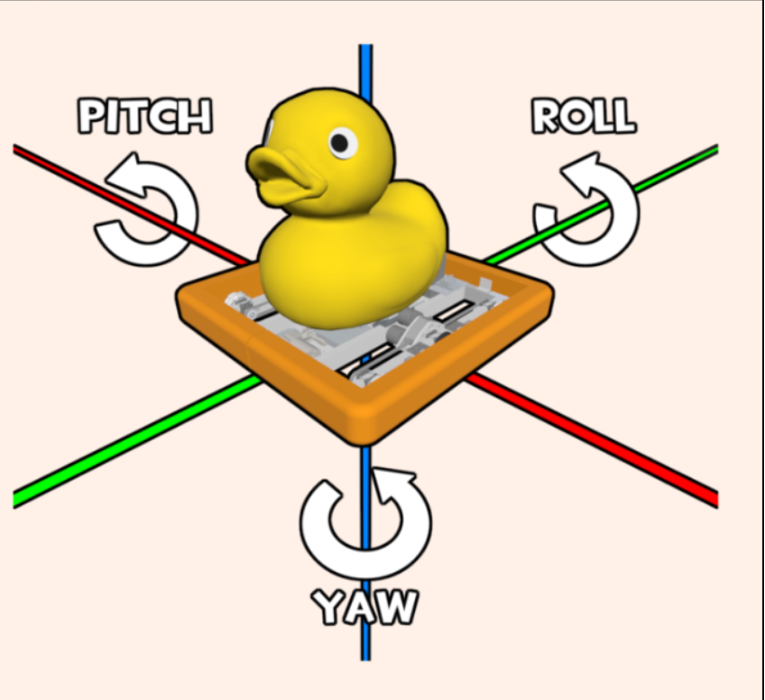
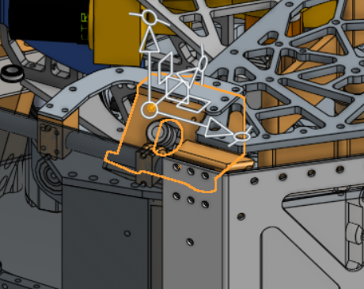
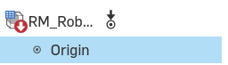
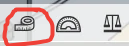
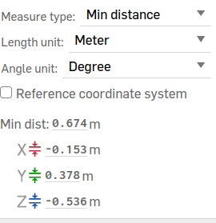
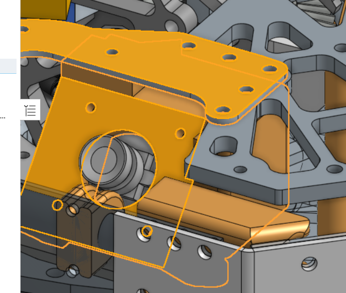

How to Do Vision Turn-On
Vision, the subsystem we use to detect the AprilTags on the field, takes some mildly painstaking setup when loading it on the bot for the first time. Fortunately, we put together this documentation page, hopefully preventing us from needing to track down a Tator of years past to help in the future.
Pre-Deployment Setup
Before we get the cameras to detect the tags, we need to do a couple of things.
Setting Camera Poses
For this, it depends on what software we are running, whether that is Limelight or PhotonVision (you can even run PhotonVision software on a Limelight camera hardware, which we have done before).
For Limelight, camera positions are set within each camera's web interface, which we will get to in a second. However, for PhotonVision, we set these positions in the code.
public static final Transform3d LEFT_CAM_POS =
new Transform3d(
new Translation3d(0.159, 0.382, 0.527),
new Rotation3d(Degrees.zero(), Degrees.of(-40), Degrees.of(90)));
The above is an example of the position of a right-facing camera which uses PhotonVision. The Translation3d takes in the input of the X (distance in front of/behind the origin assuming the robot is facing forward), the Y (distance left/right of the origin assuming the robot is facing forward) and the Z (distance above/below the origin, which is the ground) distances from the origin of the robot in meters.
Meanwhile, the Rotation3d determines how the camera is rotated in roll, pitch, and yaw, with each of them being applied in that order.
One way to visualize it is that roll rotation works like how a steering wheel spins, moving horizontally along a lateral axis. Pitch moves up and down, like nodding your head, while yaw is like shaking your head, turning side to side. The negative value in the roll argument above indicates that the camera is pointing up by 40 degrees. To indicate that our camera is facing right, we turn 90 degrees clockwise for the yaw argument. If we were facing left, this number would be negative.
Another way to visualize it is to just look at this wonderful image, which shows each of the axes of rotation.

To get both the angles and positions of the camera, we can turn to Onshape. If you don't have access, you definitely should ask whoever is in charge of CAD fall training, and it is generally wonderful for getting a lot of values and gaining an understanding for how things work instead of pestering Mechanical.
Note: make sure to be respectful of the Onshape documents, especially if you aren't on Mechanical yourself and don't work with the CAD. For example, if it says you made any changes while you were just looking around, try to spam Control+Z in order to undo them, and try to refrain from hiding objects.
Getting Camera Positions
- [] Open up the Robot Master document, then find and click on your camera.

- [] Then, find the origin (whether by clicking on it or just finding it inside the file tree).

- [] Click the little measuring tape icon in the very bottom right.

- [] Change your distance-measuring unit to meters and just like that, you have your inputs for your camera
Translation3d!

Assuming the robot is facing forward and we are looking at the back, if your camera was on the right-hand side, then your Y value (distance right/left) would need to be negative. In the same vein, if your camera was on the front half of the robot instead of the back half, then your X value would be negative. Your Z value should never be negative because then our camera would be underground, and I doubt there are many AprilTags down there.
Getting Camera Rotation
-
[] Click on your camera again. Make sure you are clicking on the entire camera rather than just the lens part.
-
[] Then, click on a surface that is flat relative to the camera. Now, your selections should look something like the image below, with one flat object and then your camera:

If the objects were selected correctly, the angle should just appear in the bottom right corner right next to where the measuring tape icon is. If you selected incorrectly, you can just click off of the robot and try again.
-
[] Subtract 90 degrees from that value you got if your flat surface was above your camera. For example, if it showed 50 degrees, we know that our camera is tilted 40 degrees upwards (even if you get a value that is greater than zero, you should still negate it if our camera is pointing upwards, which it should be in basically every single case)
-
[] Input that into the
Rotation3d! Remember, roll rotates like a steering wheel, while pitch and yaw are like nodding and shaking your head respectively. So, the value we just got corresponds to yaw, since we are looking at how far up/down the camera is tilted.
If cameras were tilted sideways, you might be able to just select a surface that would be vertically straight, like the hopper wall, instead of a horizontally flat surface with yaw.
Downloading the Software
Here are the requirements for the apps you must have installed to do this. You can just download them from the links provided.
Note for the files you download here in order to install the operating systems onto the cameras, make sure you have the same version (preferably the latest) for each of your cameras of a given type. So all Limelight cameras should be on the same Limelight OS version, and all PhotonVision cameras should have their OS image file version downloaded from the same release tag.
Raspberry Pi Imager This is what we use to put the camera OS on whatever camera we are using. There is a tool native to PhotonVision to do this as well. It can be a little unfriendly to use, but it is still an option.
PhotonVision Image (PhotonVision ONLY) For this one, just go to the latest version tag and install the image for the type of hardware you are using.
Limelight OS/Limelight Hardware App Download (Limelight software ONLY) Go to the latest version of Limelight OS and install the zip file for whichever Limelight you are using. From here, you can also install the Limelight Hardware Application, which you should install based on what type of computer you are using.
Installing onto the Camera
-
[] Plug your computer into the camera via a USB cable (The robot should be on and the camera properly plugged in)
-
[] Open up the Raspberry Pi Imager
-
[] Select the type of camera, then click
Use Customfor the OS (it should be all the way at the bottom)
3a. Select the .img.xz file you downloaded earlier from the github repo (or .zip for Limelight)
- [] For storage, the camera you are plugged into should pop up. NEVER EVER uncheck the box that excludes system devices, unless you want to end up replacing your own computer's operating system with the one for the camera, which is not a great plan.
After it finishes the imaging process, the camera should be ready to run! Repeat the previous steps (minus installing the apps and images of course) for all of your cameras.
Getting/Setting the IP Addresses
Now that we have our camera positions and they have their operating systems installed, we need to open up the web interface. However, we are met with a problem: we don't know what the IP address to open up the interface is right now. So, let's figure it out!
First, we need to download Advanced IP Scanner. This is what allows us to detect what IP addresses are on the network, including our mysterious camera! Make sure to set the scanning range from 10.21.22.1-254, so we are only checking for IP addresses for the robot instead of every single address on the network. Then, click scan!
So, an example of this would be 10.21.22.201. Once we find this IP address, we can type it into our browser, and attach the port :5800 to the end if you are using PhotonVision. If all is well, it should open up our web interface for one of our cameras!
However, we don't want to have to scan for this every single time we want to boot up the web interface. Instead, we go into settings, make the IP static, and change the super secret number to a number in the range of 6-19, and re-open the interface.
NOTE: On Tators, we set the last number of our camera IP addresses to 11 and above so we don't have to guess whether an address is a camera or not.
So, if we were opening up the interface again and set our super secret number to 13, our new IP address to type into our browser would be 10.21.22.13:5800
Camera Configuration
-
[] Make sure to set the name of your camera to the same name as whatever is in the code by clicking on the pencil next to the camera name in the dropdown in the top right of the dashboard. We love consistency!
-
[] If your camera is upside-down or sideways, then change the camera orientation in the web interface, so it is facing upright
-
[] Hold an AprilTag at least a couple steps away from the camera. If it can't detect it (there isn't a brightly-colored box that lights up around the tag in the interface), mess with the exposure and brightness until it can.
Note: We often have to compromise with better detection through better resultion/exposure and lower latency. A higher latency (lag) could mean that by the time the camera updates and we detect a tag, we are in a totally different position, so we want to minimize it as much as possible while still detecting tags in the first place. The code should allow for quite a bit of latency, but a good goal for a minimum FPS would likely be around 30-45 frames per second.
- [] If you are using Limelight, make sure to input your camera positions relative to the origin in meters in the 3D/Orientation tab
Repeat the steps in the above 2 sections for each of your cameras.
Camera Callibration
Now that our amazing robot has vision, we need to calibrate the cameras so they can detect tags.
PhotonVision - Calibrating Cameras
-
[] Get the printed-out checkerboard of AprilTags. If you don't already have one, you can print it out from the calibration tab in the PhotonVision web interface.
-
[] Go to the calibration tab for the web interface for whichever camera you're calibrating, start calibration, and take at least 50 photos of the checkerboard from various angles and distances. The key here is to get a really solid data set full of a ton of different angles and distances, rather than just head-on. Try to get images from all possible spots in the camera's vision too, including the corners.
-
[] Save and apply the configuration
-
[] Open up the AprilTag pipeline settings (still inside the web interface) and in the Mode selector, change it from 2D to 3D
-
[] Verify it works by holding up an AprilTag near the camera. If everything worked, then a cube should overlay on top of the tag on the web interface, rather than the square you should have had before.
Limelight - Camera setup
Thankfully, there is no painstaking process for Limelight cameras to perform 3D tag detection. However, we want to make sure that we do these extra things inside the Limelight hardware manager
-
[] Inside the input tab, change "Pipeline Type" to "Fiducial Markers" and make the highest available resolution for 3D tracking.
-
[] Set the "Black Level" to zero and the "Gain" to 15 (also in input tab)
-
[] Go to the Standard Tab and make sure "family" is set to "AprilTag Classic 36h11"
Testing it out!
Lastly, we want to make sure it all works together.
[ ] Establish a connection to your robot via the wifi or connecting to the radio
-
[] Deploy your robot code
-
[] Open up AdvantageScope and connect to your robot (Open up the File dropdown and then press "Connect to Robot" and then "NetworkTables 4 (Advantagekit))
-
[] Open up a 3D field by clicking the + and then 3D field
-
[] Drag in the position of the robot in 3D space, also known as the Pose (for us, it should be under the Drive dropdown as
Drive/Pose) into thePosesbox -
[] Find
RobotPosesAcceptedunder the Vision dropdown, and nest it inside theDrive/Pose. Then, select it to be a Vision target. To nest a pose when dragging it into the box, hold your mouse inside the rectangle for the pose you are trying to nest it under when dropping it in. To set it to be a Vision Target instead of a component or any other model, click on the icon next to the name of the pose once it is dragged in and click Vision Target instead from the dropdown that appears. -
[] Also drag in
Vision/TagPosesAcceptedinto the Poses box, but not nested inDrive/Pose. -
[] Hold up a tag. Is the robot where it should be on the field? If it is detecting the tag but not facing the right way/its position is off, you might have not negated the camera position values in the
Translation3dcorrectly, so go do that and re-deploy your code. One way to make sure the robot is facing the right way is to either use a placeholder like the DuckBot or our beloved 3D models in sim model for the current robot if available. To change the type of robot, click the icon next toDrive/Posein yourPosesbox and select whatever robot from the list in the dropdown that appears.
If after all this your robot is in the right spot, you did it! At last, your robot can see!